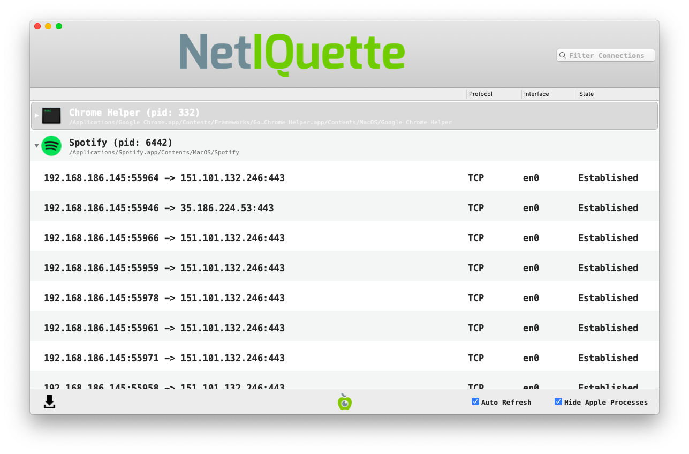

Review Network Connections
Spyware will eventually need to transmit the collected data (such as screenshots, passwords, keystrokes, etc.) to a remote location, the Command & Control server. While it is not possible to be able to predict when such transmission will occur, it is possible that some spyware will establish a permanent connection with the server, or that it will connect frequently enough for you to catch it.
In order to do check for ongoing connections you can, for example, record the whole network traffic using Wireshark and later inspect the stored results. However, a more interesting approach is to use tools that not only monitor the network activity, but that can also tie them to running processes. Generally, you should look for unusual processes connecting to suspicious IP addresses.
One popular tool to do this is Netiquette developed by Objective-See.

The tool is pretty straightforward: it lists all established network connections and provide information on the originating process, and the destination. You will likely be surprised to observe the amount of network connections active even with seemingly idle systems. The first step to search for suspicious network connections is to close all the apps running on your system that you do not need right now, it will remove some noise during the analysis.
Then look at the applications one by one, and estimate if it is legitimate that they communicate with the network. If it is, look at the different connections from this process to see if they seem legitimate. You should keep in mind a few information about network addresses :
127.0.0.1is the localhost address, any connection to it means that the program is talking to the computer itself, so it is legitimate- IP addresses starting with
192.168.or10.are private addresses, that either belong to your computer or to a computer on your own private network.
To have more information about an IP address, you can use the online tools CentralOps or IPinfo, they will tell you to which network an IP belong to, but they may not give you the real user of an IP address, so you will have to develop a sense of what is normal on a network or not.
For instance on the screenshot above, we see a connection from the Spotify process to the IP address 151.101.132.246, checking on CentralOps, we see that this IP address belongs to the organisation Fastly, an American cloud provider used by many companies like Spotify as Content Delivery Network, this is thus a legitimate connection.